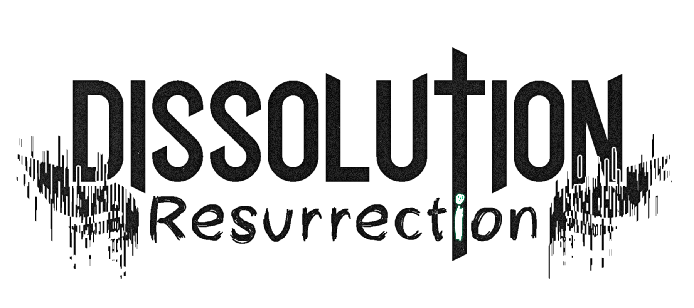

Ever feel like Minecraft death is bland and uncreative? We do, and Dissolution aims at introducing an alternative to the current boring vanilla "after death", by making it less of an interruptive inconvenience and more
of a gameplay element.
Getting started
When joining a world for the first time (may it be upon world creation or first time on a server world), you will be asked whether you feel determination or doubt. This is the mod's way to ask you if you wish to use its death
system. Answering you are determined will make you a Remnant, Dissolution's strong-willed humans with an especially powerful bond to the physical realm. Answering you feel doubt will disable the mod's death mechanics for
you, giving you the more classical vanilla approach. If you chose this option and still wish to become Remnant later in the game, drinking Eau de mort will allow you to become one.
Main mechanics
Soul state
Shall you be a Remnant, upon dying, your soul will leave your destroyed body. You will therefore become a soul, in which you can wander around the world in search of a new body. In this state, you are invisible to other
non Remnant players, and will gradually lose experience points as your memories fade away.
Undead possession
In order to be able to interract with the world again, you will have to find a new body for your mind. Undead mobs such as zombies, skeletons and other walking corpses are potential hosts and can be used as puppets. You
can possess an undead by interracting with it in this state. As a result, you will be able to feel again, but will also grant you the monster's specific strengths and weaknesses, so chose well.
Humanity reclaim
After getting a new body, you may want to also reclaim your humanity, which can be done; at the expense of others. You can gather human flesh by killing villagers, witches, illagers and other players. Feasting on their flesh
will gradually regenerate your zombie cells, and allow you to get rid of your temporary rotting body.
Major updates history
With new and re-written undead gameplay, fluid possession, cross-mod compatibility, and a polished result, Resurrection is the latest and major update for Dissolution. It redefines the way the mod is played, and marks the start of the stable versions of the mod, being the first true beta. The following changelog lists all changes brought to the mod by this update.
Main changes
With this update, we decided to find a new approach in order to give more flexibility to the player on how they want to play the mod. Therefore, we removed the state of souls mechanism to provide the player with more “real time choices” and less “anticipated limitations”. Along with this removal, many other features were taken out. The only features still in the mod are the ones listed as follows :
- Strong / weak soul, now Remnant / Vanilla soul: when joining a world for the first time, the player will be granted the choice between the mod’s death system or the vanilla death system.
- Soul player state: if the player is a Remnant, upon death, his soul leaves his body, allowing a free roaming of the world in order to select a new body to inhabit.
- Undead possession: completely re-written to be the most enjoyable possible, the undead possession system is here to stay. When in soul mode, you will be able to enter any undead monster’s body and control them. This will give you access to their inventories, advantages but also inconveniences. In a more detailed way:
- Fixed latency when moving around while possessing something
- Fixed offhand items rendering
- Fixed bow usage when possessing entities
- Fixed possessed mobs being unable to mount or dismount other things
- Fixed possession removal in creative
- Allowed undead players to go through portals when using possession
- Allowed possession to work with any undead mob from any mod
New Items
- Human flesh:
- Can be eaten by a human to restore food
- Can be eaten by an undead player to regain life and eventually his humanity
- Can be obtained from:
- Killing humans (such as human players, villagers, witches and illagers)
- Crafting via one rotten flesh piece and one ghast tear
- Putting a ghast tear in a water filled cauldron, and purifying rotten flesh by interacting with it
- Human organs (heart, brain): serving the same use as the human flesh, they are mainly useful for brewing the mod’s potions.
- Obnoxious potion: obtained when brewing human flesh in water bottles, it’s ineffective and acts as a, intermediary potion.
- Eau de mort: obtained when brewing a human brain in obnoxious potions, it can expel Remnant souls out of their body, without destroying it, and alter vanilla souls to make them Remnant.
- Sanguine potions: obtained when brewing a human heart in obnoxious potions, it has no effect for souls other than Remnant, altering them to become vanilla.
Various changes
- API changes : new Forge events for possession
- The air bar is now rendered when possessing something
- Possessed mobs now render arms in first person and full body in the inventory
- Players possessing entities stop losing their experience
- Possessed entities don’t get artificially targeted by mobs normally targetting players anymore
- Added baby zombies immunity to sunlight back by default
Cross-mod interactions
- Added Thaumcraft aspects for every entity and item
- Added Thaumcraft brain to human brain recipe
- Added Inspirations recipe for purified flesh
- Added Inspirations recipes for the mod’s potions